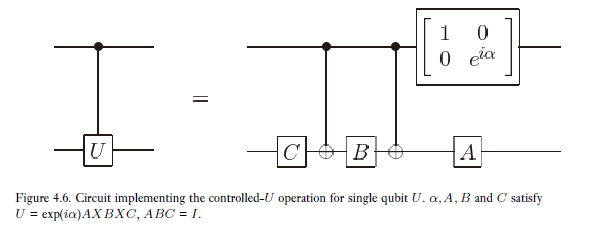

重要的量子比特运算由2 × 2 2\times 2 2 × 2
Pauli 阵：
X = σ 1 = ( 0 1 1 0 ) Y = σ 2 = ( 0 − i i 0 ) Z = σ 3 = ( 1 0 0 − 1 ) X=\sigma_1=\begin{pmatrix}0&1\\1&0\end{pmatrix}\\
Y=\sigma_2=\begin{pmatrix}0&-i\\i&0\end{pmatrix}\\
Z=\sigma_3=\begin{pmatrix}1&0\\0&-1\end{pmatrix}
X = σ 1 = ( 0 1 1 0 ) Y = σ 2 = ( 0 i − i 0 ) Z = σ 3 = ( 1 0 0 − 1 )
Hadamard 门：
H = 1 2 ( 1 1 1 − 1 ) H=\frac{1}{\sqrt{2}}\begin{pmatrix}1&1\\1&-1\end{pmatrix}
H = 2 1 ( 1 1 1 − 1 )
相位门：
S = ( 1 0 0 i ) S=\begin{pmatrix}1&0\\0&i\end{pmatrix}
S = ( 1 0 0 i )
T 门（π / 8 \pi/8 π / 8
T = ( 1 0 0 e x p ( i π / 4 ) ) T=\begin{pmatrix}1&0\\0&exp(i\pi/4)\end{pmatrix}
T = ( 1 0 0 e x p ( i π / 4 ) )
当出现在指数时，Pauli 矩阵导出三类有用的酉矩阵，称为关于x ^ , y ^ , z ^ \hat{x},\hat{y},\hat{z} x ^ , y ^ , z ^
R x ( θ ) = e − i θ X / 2 = c o s θ 2 I − i s i n θ 2 X = ( c o s θ 2 − i s i n θ 2 − i s i n θ 2 c o s θ 2 ) R y ( θ ) = e − i θ Y / 2 = c o s θ 2 I − i s i n θ 2 Y = ( c o s θ 2 − s i n θ 2 s i n θ 2 c o s θ 2 ) R z ( θ ) = e − i θ Z / 2 = c o s θ 2 I − i s i n θ 2 Z = ( e − i θ / 2 0 0 e i θ / 2 ) R_x(\theta)=e^{-i\theta X/2}=cos\frac{\theta}{2}I-isin\frac{\theta}{2}X=
\begin{pmatrix}cos\frac{\theta}{2}&-isin\frac{\theta}{2}\\-isin\frac{\theta}{2}&cos\frac{\theta}{2}\end{pmatrix}\\
R_y(\theta)=e^{-i\theta Y/2}=cos\frac{\theta}{2}I-isin\frac{\theta}{2}Y=
\begin{pmatrix}cos\frac{\theta}{2}&-sin\frac{\theta}{2}\\sin\frac{\theta}{2}&cos\frac{\theta}{2}\end{pmatrix}\\
R_z(\theta)=e^{-i\theta Z/2}=cos\frac{\theta}{2}I-isin\frac{\theta}{2}Z=
\begin{pmatrix}e^{-i\theta/2}&0\\0&e^{i\theta/2}\end{pmatrix}\\
R x ( θ ) = e − i θ X / 2 = c o s 2 θ I − i s i n 2 θ X = ( c o s 2 θ − i s i n 2 θ − i s i n 2 θ c o s 2 θ ) R y ( θ ) = e − i θ Y / 2 = c o s 2 θ I − i s i n 2 θ Y = ( c o s 2 θ s i n 2 θ − s i n 2 θ c o s 2 θ ) R z ( θ ) = e − i θ Z / 2 = c o s 2 θ I − i s i n 2 θ Z = ( e − i θ / 2 0 0 e i θ / 2 )
推广地，设( n x ^ , n y ^ , n z ^ ) (\hat{n_x},\hat{n_y},\hat{n_z}) ( n x ^ , n y ^ , n z ^ ) θ \theta θ
R n ^ ( θ ) = e x p ( − i θ n ^ ⋅ σ → / 2 ) = c o s θ 2 I − i s i n θ 2 ( n x X + n y Y + n z Z ) R_{\hat{n}}(\theta)=exp(-i\theta\hat{n}\cdot\overrightarrow{\sigma}/2)=cos\frac{\theta}{2}I-isin\frac{\theta}{2}(n_xX+n_yY+n_zZ)
R n ^ ( θ ) = e x p ( − i θ n ^ ⋅ σ / 2 ) = c o s 2 θ I − i s i n 2 θ ( n x X + n y Y + n z Z )
单量子比特的酉算子都可以写成：
U 2 × 2 = e i α R n ^ ( θ ) U_{2\times 2}=e^{i\alpha}R_{\hat{n}}(\theta)
U 2 × 2 = e i α R n ^ ( θ )
其中：
若 U = a I + b X + c Y + d Z a = c o s θ 2 e i α b = − i n x s i n θ 2 e i α c = − i n y s i n θ 2 e i α d = − i n z s i n θ 2 e i α 若U=aI+bX+cY+dZ\\
a=cos\frac{\theta}{2}e^{i\alpha}\\
b=-in_xsin\frac{\theta}{2}e^{i\alpha}\\
c=-in_ysin\frac{\theta}{2}e^{i\alpha}\\
d=-in_zsin\frac{\theta}{2}e^{i\alpha}
若 U = a I + b X + c Y + d Z a = c o s 2 θ e i α b = − i n x s i n 2 θ e i α c = − i n y s i n 2 θ e i α d = − i n z s i n 2 θ e i α
单量子比特上的酉算子可以写成很多形式，例如旋转的组合乘上全局相移：
（单量子比特的z − y z-y z − y α , β , γ , δ \alpha,\beta,\gamma,\delta α , β , γ , δ
U = e i α R z ( β ) R y ( γ ) R z ( δ ) U=e^{i\alpha}R_z(\beta)R_y(\gamma)R_z(\delta)
U = e i α R z ( β ) R y ( γ ) R z ( δ )
证明：因为 U 是酉的，则 U 的行列均构成正交标准基，因此可以将U = ( a b c d ) U=\begin{pmatrix}a&b\\c&d\end{pmatrix} U = ( a c b d )
U = ( e i ( α − β / 2 − δ / 2 ) c o s γ 2 − e i ( α − β / 2 + δ / 2 ) s i n γ 2 e i ( α + β / 2 − δ / 2 ) s i n γ 2 e i ( α + β / 2 + δ / 2 ) c o s γ 2 ) = e i α R z ( β ) R y ( γ ) R z ( δ ) U=\begin{pmatrix}e^{i(\alpha-\beta/2-\delta/2)}cos\frac{\gamma}{2}&-e^{i(\alpha-\beta/2+\delta/2)}sin\frac{\gamma}{2}\\
e^{i(\alpha+\beta/2-\delta/2)}sin\frac{\gamma}{2}&e^{i(\alpha+\beta/2+\delta/2)}cos\frac{\gamma}{2}
\end{pmatrix}=e^{i\alpha}R_z(\beta)R_y(\gamma)R_z(\delta)
U = ( e i ( α − β / 2 − δ / 2 ) c o s 2 γ e i ( α + β / 2 − δ / 2 ) s i n 2 γ − e i ( α − β / 2 + δ / 2 ) s i n 2 γ e i ( α + β / 2 + δ / 2 ) c o s 2 γ ) = e i α R z ( β ) R y ( γ ) R z ( δ )
* 这其实也告诉我们酉矩阵的一般形式。
由证明，可以看出，若U = ( a b c d ) U=\begin{pmatrix}a&b\\c&d\end{pmatrix} U = ( a c b d )
γ = 2 a r c t a n ∣ b ∣ ∣ a ∣ β 是 a 和 c 的辐角差 δ 是 c 和 d 的辐角差 α 可以最后观察下差的相位 \gamma=2arctan\frac{|b|}{|a|}\\
\beta是a和c的辐角差\\
\delta是c和d的辐角差\\
\alpha可以最后观察下差的相位
γ = 2 a r c t a n ∣ a ∣ ∣ b ∣ β 是 a 和 c 的 辐 角 差 δ 是 c 和 d 的 辐 角 差 α 可 以 最 后 观 察 下 差 的 相 位
本质在于，U 描述的是 Bloch 球面上一点怎么到另一点的。
例如∣ ψ ′ ⟩ = U ∣ ψ ⟩ |\psi'\rang=U|\psi\rang ∣ ψ ′ ⟩ = U ∣ ψ ⟩ ∣ ψ ⟩ , ∣ ψ ′ ⟩ |\psi\rang,|\psi'\rang ∣ ψ ⟩ , ∣ ψ ′ ⟩ z O x zOx z O x z O x zOx z O x ∣ ψ ⟩ |\psi\rang ∣ ψ ⟩ z O x zOx z O x ∣ ψ ′ ⟩ |\psi'\rang ∣ ψ ′ ⟩ z O x zOx z O x ∣ ψ ′ ⟩ |\psi'\rang ∣ ψ ′ ⟩
推论：设 U 是单量子比特上的酉门，则存在单量子比特上的酉算子 A,B,C 使得 ABC=I 且U = e i α A X B X C U=e^{i\alpha}AXBXC U = e i α A X B X C
证明：仍采用z − y z-y z − y
A = R z ( β ) R y ( γ / 2 ) , B = R y ( − γ / 2 ) R z ( − ( δ + β ) / 2 ) , C = R z ( ( δ − β ) / 2 ) A=R_z(\beta)R_y(\gamma/2),B=R_y(-\gamma/2)R_z(-(\delta+\beta)/2),C=R_z((\delta-\beta)/2)
A = R z ( β ) R y ( γ / 2 ) , B = R y ( − γ / 2 ) R z ( − ( δ + β ) / 2 ) , C = R z ( ( δ − β ) / 2 )
则有A B C = I ABC=I A B C = I
又因为X 2 = I X^2=I X 2 = I X R y ( θ ) X = R y ( − θ ) XR_y(\theta)X=R_y(-\theta) X R y ( θ ) X = R y ( − θ )
X B X = ( X R y ( − γ / 2 ) X ) ( X R z ( − ( δ + β ) / 2 ) X ) = R y ( γ / 2 ) R z ( ( δ + β ) / 2 ) XBX=(XR_y(-\gamma/2)X)(XR_z(-(\delta+\beta)/2)X)=R_y(\gamma/2)R_z((\delta+\beta)/2)
X B X = ( X R y ( − γ / 2 ) X ) ( X R z ( − ( δ + β ) / 2 ) X ) = R y ( γ / 2 ) R z ( ( δ + β ) / 2 )
所以
A X B X C = R z ( β ) R y ( γ / 2 ) R y ( γ / 2 ) R z ( ( δ + β ) / 2 ) R z ( ( δ − β ) / 2 ) = R z ( β ) R y ( γ ) R z ( δ = U ) AXBXC=R_z(\beta)R_y(\gamma /2)R_y(\gamma/2)R_z((\delta+\beta)/2)R_z((\delta-\beta)/2)=R_z(\beta)R_y(\gamma)R_z(\delta=U)
A X B X C = R z ( β ) R y ( γ / 2 ) R y ( γ / 2 ) R z ( ( δ + β ) / 2 ) R z ( ( δ − β ) / 2 ) = R z ( β ) R y ( γ ) R z ( δ = U )
证毕
量子门记号 ("-" 表示量子比特，“/" 表示量子比特束)
推广地，有一般受控酉算子门：
如果控制量子比特是∣ 1 ⟩ |1\rang ∣ 1 ⟩
在 Hadamard 门作用后，控制量子比特和目标量子比特的角色会互换。在 CNOT 门作用下：
∣ + + ⟩ → ∣ + + ⟩ ∣ − + ⟩ → ∣ − + ⟩ ∣ − − ⟩ → ∣ + − ⟩ ∣ + − ⟩ → ∣ − − ⟩ |++\rang\rightarrow|++\rang\\
|-+\rang\rightarrow|-+\rang\\
|--\rang\rightarrow|+-\rang\\
|+-\rang\rightarrow|--\rang
∣ + + ⟩ → ∣ + + ⟩ ∣ − + ⟩ → ∣ − + ⟩ ∣ − − ⟩ → ∣ + − ⟩ ∣ + − ⟩ → ∣ − − ⟩
即第二量子比特为∣ − ⟩ |-\rang ∣ − ⟩ ± \pm ±
下面考虑如何实现受控任意酉运算。
首先，根据前面推论，任意单量子比特酉算子U = e i α A X B X C U=e^{i\alpha}AXBXC U = e i α A X B X C A B C = I ABC=I A B C = I
所以可以先实现受控相移：
注意到左线路之所以等价于右线路，是因为作为一个双量子比特系统，左线路和右线路都能完成：
∣ 00 ⟩ → ∣ 00 ⟩ , ∣ 01 ⟩ → ∣ 01 ⟩ , ∣ 10 ⟩ → e i α ∣ 10 ⟩ , ∣ 11 ⟩ → e i α ∣ 11 ⟩ |00\rang\rightarrow|00\rang,|01\rang\rightarrow|01\rang,|10\rang\rightarrow e^{i\alpha}|10\rang,|11\rang\rightarrow e^{i\alpha}|11\rang
∣ 0 0 ⟩ → ∣ 0 0 ⟩ , ∣ 0 1 ⟩ → ∣ 0 1 ⟩ , ∣ 1 0 ⟩ → e i α ∣ 1 0 ⟩ , ∣ 1 1 ⟩ → e i α ∣ 1 1 ⟩
下面注意受控 X 门就是 CNOT 门，然后加上 ABC，则有：

” 受控 “全部用 CNOT 门解决。因为A B C = I ABC=I A B C = I ∣ 1 ⟩ |1\rang ∣ 1 ⟩
多控制量子比特算子。设共有n + k n+k n + k ∣ 1 ⟩ |1\rang ∣ 1 ⟩
C n ( U ) ∣ x 1 x 2 . . . x n ⟩ ∣ ψ ⟩ = ∣ x 1 x 2 . . . x n ⟩ U x 1 x 2 . . . x n ∣ ψ ⟩ C^n(U)|x_1x_2...x_n\rang|\psi\rang=|x_1x_2...x_n\rang U^{x_1x_2...x_n}|\psi\rang
C n ( U ) ∣ x 1 x 2 . . . x n ⟩ ∣ ψ ⟩ = ∣ x 1 x 2 . . . x n ⟩ U x 1 x 2 . . . x n ∣ ψ ⟩
而 Toffoli 门 （即C 2 ( X ) C^2(X) C 2 ( X ) V = ( 1 − i ) ( I + i X ) / 2 V=(1-i)(I+iX)/2 V = ( 1 − i ) ( I + i X ) / 2
最终我们将证明，任意一个酉算子可以仅由 Hadamard、相位、CNOT、和 T 门组合来实现，这实现是一个很好的近似，下图展示了 Toffoli 门的一个构造，它非常有用：
下面解决如何利用已有的量子门实现C n ( U ) C^n(U) C n ( U )
上图是一个实现C n ( U ) C^n(U) C n ( U )
工作量子比特初始都是∣ 0 ⟩ |0\rang ∣ 0 ⟩
当然受控门有时候也需要反过来，例如 “当控制比特为∣ 0 ⟩ |0\rang ∣ 0 ⟩
如果控制比特数量大于 1 时，控制信息可以变成一个二进制串，例如当且仅当控制比特为∣ 010 ⟩ |010\rang ∣ 0 1 0 ⟩
同样，目标量子比特也可以有多个：
线路恒等式：（令 C 是第一量子比特做控制比特，第二量子比特做目标量子比特的受控非门，X i X_i X i
C X 1 C = X 1 X 2 , C Y 1 C = Y 1 X 2 , C Z 1 C = Z 1 C X 2 C = X 2 , C Y 2 C = Z 1 Y 2 , C Z 2 C = Z 1 Z 2 R z , 1 ( θ ) C = C R z , 1 ( θ ) , R x , 2 ( θ ) C = C R x , 2 ( θ ) CX_1C=X_1X_2,CY_1C=Y_1X_2,CZ_1C=Z_1\\
CX_2C=X_2,CY_2C=Z_1Y_2,CZ_2C=Z_1Z_2\\
R_{z,1}(\theta)C=CR_{z,1}(\theta),R_{x,2}(\theta)C=CR_{x,2}(\theta)
C X 1 C = X 1 X 2 , C Y 1 C = Y 1 X 2 , C Z 1 C = Z 1 C X 2 C = X 2 , C Y 2 C = Z 1 Y 2 , C Z 2 C = Z 1 Z 2 R z , 1 ( θ ) C = C R z , 1 ( θ ) , R x , 2 ( θ ) C = C R x , 2 ( θ )
先考虑三阶矩阵的情况。设U = ( a d g b e h c f i ) U=\begin{pmatrix}a&d&g\\b&e&h\\c&f&i\end{pmatrix} U = ⎝ ⎛ a b c d e f g h i ⎠ ⎞ U 1 , U 2 , U 3 U_1,U_2,U_3 U 1 , U 2 , U 3 U 3 U 2 U 1 U = I U_3U_2U_1U=I U 3 U 2 U 1 U = I
则U = U 1 ⊺ U 2 ⊺ U 3 ⊺ U=U_1^\intercal U_2^\intercal U_3^\intercal U = U 1 ⊺ U 2 ⊺ U 3 ⊺
先构造U 1 U_1 U 1
若 b=0，则U 1 = I U_1=I U 1 = I
U 1 = ( a ∗ ∣ a ∣ 2 + ∣ b ∣ 2 b ∗ ∣ a ∣ 2 + ∣ b ∣ 2 0 b ∣ a ∣ 2 + ∣ b ∣ 2 − a ∣ a ∣ 2 + ∣ b ∣ 2 0 0 0 1 ) U_1=\begin{pmatrix}\frac{a^*}{\sqrt{|a|^2+|b|^2}}&\frac{b^*}{\sqrt{|a|^2+|b|^2}}&0\\
\frac{b}{\sqrt{|a|^2+|b|^2}}&\frac{-a}{\sqrt{|a|^2+|b|^2}}&0\\
0&0&1
\end{pmatrix}
U 1 = ⎝ ⎜ ⎜ ⎜ ⎛ ∣ a ∣ 2 + ∣ b ∣ 2 a ∗ ∣ a ∣ 2 + ∣ b ∣ 2 b 0 ∣ a ∣ 2 + ∣ b ∣ 2 b ∗ ∣ a ∣ 2 + ∣ b ∣ 2 − a 0 0 0 1 ⎠ ⎟ ⎟ ⎟ ⎞
此时，U_1U=\begin{pmatrix}a'&d'&g'\\0&e'&h'\\c'&f'&i'\end
其中，重点在于把第二行第一列变成 0. 而且U 1 U U_1U U 1 U
再构造U 2 U_2 U 2 U 2 U 1 U U_2U_1U U 2 U 1 U
若c ′ = 0 c'=0 c ′ = 0 U 2 = ( a ′ ∗ 0 0 0 1 0 0 0 1 ) U_2=\begin{pmatrix}a'^*&0&0\\0&1&0\\0&0&1\end{pmatrix} U 2 = ⎝ ⎛ a ′ ∗ 0 0 0 1 0 0 0 1 ⎠ ⎞
U 2 = ( a ′ ∗ ∣ a ′ ∣ 2 + ∣ c ′ ∣ 2 0 c ′ ∗ ∣ a ′ ∣ 2 + ∣ c ′ ∣ 2 0 1 0 c ′ ∣ a ′ ∣ 2 + ∣ c ′ ∣ 2 0 − a ′ ∣ a ′ ∣ 2 + ∣ c ′ ∣ 2 ) U_2=\begin{pmatrix}\frac{a'^*}{\sqrt{|a'|^2+|c'|^2}}&0&\frac{c'^*}{\sqrt{|a'|^2+|c'|^2}}\\
0&1&0\\
\frac{c'}{\sqrt{|a'|^2+|c'|^2}}&0&\frac{-a'}{\sqrt{|a'|^2+|c'|^2}}
\end{pmatrix}
U 2 = ⎝ ⎜ ⎜ ⎜ ⎛ ∣ a ′ ∣ 2 + ∣ c ′ ∣ 2 a ′ ∗ 0 ∣ a ′ ∣ 2 + ∣ c ′ ∣ 2 c ′ 0 1 0 ∣ a ′ ∣ 2 + ∣ c ′ ∣ 2 c ′ ∗ 0 ∣ a ′ ∣ 2 + ∣ c ′ ∣ 2 − a ′ ⎠ ⎟ ⎟ ⎟ ⎞
此时，U_2U_1U=\begin{pmatrix}a''&d''&g''\\0&e''&h''\\0&f''&i''\end
由于U 2 U 1 U U_2U_1U U 2 U 1 U a ′ ′ = 1 , d ′ ′ = g ′ ′ = 0 a''=1,d''=g''=0 a ′ ′ = 1 , d ′ ′ = g ′ ′ = 0
最后，构造
U 3 = ( U 2 U 1 U ) ⊺ = ( 1 0 0 0 e ′ ′ ∗ f ′ ′ ∗ 0 h ′ ′ ∗ i ′ ′ ∗ ) U_3=(U_2U_1U)^\intercal=\begin{pmatrix}1&0&0\\0&e''^*&f''^*\\0&h''^*&i''^*\end{pmatrix}
U 3 = ( U 2 U 1 U ) ⊺ = ⎝ ⎛ 1 0 0 0 e ′ ′ ∗ h ′ ′ ∗ 0 f ′ ′ ∗ i ′ ′ ∗ ⎠ ⎞
则有U 3 U 2 U 1 U = I U_3U_2U_1U=I U 3 U 2 U 1 U = I
此时，U = U 1 ⊺ U 2 ⊺ U 3 ⊺ U=U_1^\intercal U_2^\intercal U_3^\intercal U = U 1 ⊺ U 2 ⊺ U 3 ⊺
再考虑一般情况，例如一个 d 维的矩阵，则先可以找到两级酉矩阵V 1 , V 2 , . . . , V d − 1 V_1,V_2,...,V_{d-1} V 1 , V 2 , . . . , V d − 1 V d − 1 . . . V 1 V V_{d-1}...V_1V V d − 1 . . . V 1 V V 1 ′ , V 2 ′ , . . . , V d − 2 ′ V_1',V_2',...,V_{d-2}' V 1 ′ , V 2 ′ , . . . , V d − 2 ′
最后，有V k . . . V 1 U = I , U = V 1 ⊺ . . . V k ⊺ V_{k}...V_1U=I,U=V_1^\intercal...V_k^\intercal V k . . . V 1 U = I , U = V 1 ⊺ . . . V k ⊺ k ≤ ( d − 1 ) + ( d − 2 ) + . . . + 1 = d ( d − 1 ) / 2 k\leq(d-1)+(d-2)+...+1=d(d-1)/2 k ≤ ( d − 1 ) + ( d − 2 ) + . . . + 1 = d ( d − 1 ) / 2
则 n 个量子比特系统上的酉门可以写成至多2 n ( 2 n − 1 ) / 2 2^{n}(2^{n}-1)/2 2 n ( 2 n − 1 ) / 2
但存在d × d d\times d d × d U U U d − 1 d-1 d − 1
证明了 d 维 Hilbert 空间上的任意酉矩阵可以写成两级酉矩阵的乘积形式，现在证明单量子比特门和受控非门可以实现 n 量子比特空间上的任意二级酉运算。这两个结论结合起来可以看到单量子比特门和受控非门可以实现 n 量子比特上的任意酉运算，于是它们对于量子计算来说是通用的。
设 U 是一个 n 量子比特计算机上的两级酉矩阵。设 U 在状态∣ s ⟩ , ∣ t ⟩ |s\rang,|t\rang ∣ s ⟩ , ∣ t ⟩ s = s 1 . . s n , t = t 1 . . . t n s=s_1..s_n,t=t_1...t_n s = s 1 . . s n , t = t 1 . . . t n U ~ \tilde{U} U ~ U U U 2 × 2 2\times 2 2 × 2 U ~ \tilde{U} U ~
现在的目标是基于单量子比特门和受控非门，构造一个实现U U U Gray 码 。
* 连接 s 和 t 的 Gray 码：以 s 开头 t 结尾的一组二进制数，使得相邻两个二进制数恰有一位不同。* 例:
s = ( 101001 ) 2 , t = ( 110011 ) 2 G r a y = { ( 101001 ) 2 ( 101011 ) 2 ( 100011 ) 2 ( 110011 ) 2 } s=(101001)_2,t=(110011)_2\\
Gray=\{\\
(101001)_2\\
(101011)_2\\
(100011)_2\\
(110011)_2\\
\}
s = ( 1 0 1 0 0 1 ) 2 , t = ( 1 1 0 0 1 1 ) 2 G r a y = { ( 1 0 1 0 0 1 ) 2 ( 1 0 1 0 1 1 ) 2 ( 1 0 0 0 1 1 ) 2 ( 1 1 0 0 1 1 ) 2 }
令g 1 g_1 g 1 g m g_m g m g 1 = s , g m = t g_1=s,g_m=t g 1 = s , g m = t m ≤ n + 1 m\leq n+1 m ≤ n + 1
实现 U 的基本想法是通过一系列门（比特翻转）实现变换∣ g 1 ⟩ → ∣ g 2 ⟩ → . . . → ∣ g m − 1 ⟩ |g_1\rang\rightarrow|g_2\rang\rightarrow...\rightarrow|g_{m-1}\rang ∣ g 1 ⟩ → ∣ g 2 ⟩ → . . . → ∣ g m − 1 ⟩ U ~ \tilde{U} U ~ g m − 1 g_{m-1} g m − 1 t t t n − 1 n-1 n − 1
U = ( a c 1 1 1 1 1 1 b d ) U=\begin{pmatrix}a&&&&&&&c\\&1&&&&&&\\&&1&&&&&\\&&&1&&&&\\&&&&1&&&\\&&&&&1&&\\&&&&&&1&\\b&&&&&&&d\end{pmatrix}
U = ⎝ ⎜ ⎜ ⎜ ⎜ ⎜ ⎜ ⎜ ⎜ ⎜ ⎜ ⎜ ⎛ a b 1 1 1 1 1 1 c d ⎠ ⎟ ⎟ ⎟ ⎟ ⎟ ⎟ ⎟ ⎟ ⎟ ⎟ ⎟ ⎞
a,b,c,d 是使得U ~ = ( a c b d ) \tilde{U}=\begin{pmatrix}a&c\\b&d\end{pmatrix} U ~ = ( a b c d ) U U U ∣ 000 ⟩ |000\rang ∣ 0 0 0 ⟩ ∣ 111 ⟩ |111\rang ∣ 1 1 1 ⟩ ( 000 ) 2 , ( 001 ) 2 , ( 011 ) 2 , ( 111 ) 2 (000)_2,(001)_2,(011)_2,(111)_2 ( 0 0 0 ) 2 , ( 0 0 1 ) 2 , ( 0 1 1 ) 2 , ( 1 1 1 ) 2
考虑下这样做为什么是对的。因为 a,b,c,d 行列是 0 和 7，转为二进制即为( 000 ) 2 , ( 111 ) 2 (000)_2,(111)_2 ( 0 0 0 ) 2 , ( 1 1 1 ) 2 ( 000 ) 2 (000)_2 ( 0 0 0 ) 2 ( 111 ) 2 (111)_2 ( 1 1 1 ) 2
回到一般情形，实现 n 个量子比特上的任意酉运算需要O ( n 2 4 n ) O(n^24^n) O ( n 2 4 n )
首先，一个离散的门的集合不可能精确实现所有酉运算，因为酉矩阵是连续的。然而，一个离散的门的集合却可以去近似酉运算。
设 U 和 V 是同一状态空间上的酉算子，U 是希望实现的酉算子，V 是实际实现的酉算子。定义用 V 实现 U 的误差为：
E ( U , V ) ≡ m a x ∣ ψ ⟩ ∣ ∣ ( U − V ) ∣ ψ ⟩ ∣ ∣ E(U,V)\equiv max_{|\psi\rang}||(U-V)|\psi\rang||
E ( U , V ) ≡ m a x ∣ ψ ⟩ ∣ ∣ ( U − V ) ∣ ψ ⟩ ∣ ∣
其中 max 要取遍状态空间中所有的归一化状态∣ ψ ⟩ |\psi\rang ∣ ψ ⟩
近似量子线路：
设一个量子系统初态是∣ ψ ⟩ |\psi\rang ∣ ψ ⟩
p U = ⟨ ψ ∣ U ⊺ M U ∣ ψ ⟩ , p V = ⟨ ψ ∣ V ⊺ M V ∣ ψ ⟩ ∣ p U − p V ∣ = ∣ ⟨ ψ ∣ U ⊺ M U ∣ ψ ⟩ − ⟨ ψ ∣ V ⊺ M V ∣ ψ ⟩ ∣ p_U=\lang\psi|U^\intercal MU|\psi\rang,p_V=\lang\psi|V^\intercal MV|\psi\rang\\
|p_U-p_V|=|\lang\psi|U^\intercal MU|\psi\rang-\lang\psi|V^\intercal MV|\psi\rang|
p U = ⟨ ψ ∣ U ⊺ M U ∣ ψ ⟩ , p V = ⟨ ψ ∣ V ⊺ M V ∣ ψ ⟩ ∣ p U − p V ∣ = ∣ ⟨ ψ ∣ U ⊺ M U ∣ ψ ⟩ − ⟨ ψ ∣ V ⊺ M V ∣ ψ ⟩ ∣
令∣ Δ ⟩ = ( U − V ) ∣ ψ ⟩ |\Delta\rang=(U-V)|\psi\rang ∣ Δ ⟩ = ( U − V ) ∣ ψ ⟩
∣ p U − p V ∣ = ∣ ⟨ ψ ∣ U ⊺ M ∣ Δ ⟩ + ⟨ Δ ∣ M V ∣ ψ ⟩ ∣ ≤ ∣ ⟨ ψ ∣ U ⊺ M ∣ Δ ⟩ ∣ + ∣ ⟨ Δ ∣ M V ∣ ψ ⟩ ∣ 而 ⟨ ψ ∣ U ⊺ M ∣ Δ ⟩ 2 ≤ ⟨ ψ ∣ U ⊺ M M ⊺ U ∣ ψ ⟩ ⟨ Δ ∣ Δ ⟩ ≤ 1 ⋅ ⟨ Δ ∣ Δ ⟩ 所以 ∣ p U − p V ∣ ≤ ∣ ∣ ∣ Δ ⟩ ∣ ∣ + ∣ ∣ ∣ Δ ⟩ ∣ ∣ = 2 E ( U , V ) |p_U-p_V|=|\lang\psi|U^\intercal M|\Delta\rang+\lang\Delta|MV|\psi\rang|\\
\leq|\lang\psi|U^\intercal M|\Delta\rang|+|\lang\Delta|MV|\psi\rang|\\
而\lang\psi|U^\intercal M|\Delta\rang^2\leq\lang\psi |U^\intercal MM^\intercal U|\psi\rang\lang\Delta|\Delta\rang\leq1\cdot\lang\Delta|\Delta\rang\\
所以|p_U-p_V|\leq|||\Delta\rang||+|||\Delta\rang||=2E(U,V)
∣ p U − p V ∣ = ∣ ⟨ ψ ∣ U ⊺ M ∣ Δ ⟩ + ⟨ Δ ∣ M V ∣ ψ ⟩ ∣ ≤ ∣ ⟨ ψ ∣ U ⊺ M ∣ Δ ⟩ ∣ + ∣ ⟨ Δ ∣ M V ∣ ψ ⟩ ∣ 而 ⟨ ψ ∣ U ⊺ M ∣ Δ ⟩ 2 ≤ ⟨ ψ ∣ U ⊺ M M ⊺ U ∣ ψ ⟩ ⟨ Δ ∣ Δ ⟩ ≤ 1 ⋅ ⟨ Δ ∣ Δ ⟩ 所 以 ∣ p U − p V ∣ ≤ ∣ ∣ ∣ Δ ⟩ ∣ ∣ + ∣ ∣ ∣ Δ ⟩ ∣ ∣ = 2 E ( U , V )
这个式子定量地表示了，若E ( U , V ) E(U,V) E ( U , V )
E ( U m U m − 1 . . . U 1 , V m V m − 1 . . . V 1 ) ≤ ∑ i = 1 m E ( U i , V i ) E(U_mU_{m-1}...U_1,V_mV_{m-1}...V_1)\leq\sum_{i=1}^m E(U_i,V_i)
E ( U m U m − 1 . . . U 1 , V m V m − 1 . . . V 1 ) ≤ i = 1 ∑ m E ( U i , V i )
因为利用三角不等式，有E ( U 2 U 1 , V 2 V 2 ) ≤ E ( U 2 , V 2 ) + E ( U 1 , V 1 ) E(U_2U_1,V_2V_2)\leq E(U_2,V_2)+E(U_1,V_1) E ( U 2 U 1 , V 2 V 2 ) ≤ E ( U 2 , V 2 ) + E ( U 1 , V 1 )
再精确地描述∣ p U − p V ∣ ≤ 2 E ( U , V ) |p_U-p_V|\leq 2E(U,V) ∣ p U − p V ∣ ≤ 2 E ( U , V ) ∣ ψ ⟩ |\psi\rang ∣ ψ ⟩ V ∣ ψ ⟩ V|\psi\rang V ∣ ψ ⟩ U ∣ ψ ⟩ U|\psi\rang U ∣ ψ ⟩
假设希望完成一个包含 m 个酉门U 1 , . . . , U m U_1,...,U_m U 1 , . . . , U m V j V_j V j U j U_j U j Δ \Delta Δ E ( U i , V i ) ≤ Δ / ( 2 m ) E(U_i,V_i)\leq\Delta/(2m) E ( U i , V i ) ≤ Δ / ( 2 m )
首先证明 Hadamard 门和π / 8 \pi/8 π / 8
考虑 T 门和 HTH 门。T 门除了一个不要紧的全局相位，相当于将一个状态对应 Bloch 球面上的点绕z ^ \hat{z} z ^ π / 4 \pi/4 π / 4 H T H = e i π / 8 R x ( π 4 ) HTH=e^{i\pi/8}Rx(\frac{\pi}{4}) H T H = e i π / 8 R x ( 4 π ) x ^ \hat{x} x ^ π / 4 \pi/4 π / 4
T H T H = e i π / 4 R z ( π 4 ) R x ( π 4 ) = e i π / 4 { c o s 2 π 8 I − i [ c o s π 8 ( X + Z ) + s i n π 8 Y ] s i n π 8 } = e i π / 4 [ c o s 2 π 8 − i c o s π 8 ( X + Z ) + s i n π 8 Y 1 + c o s 2 π 8 ⋅ 1 + c o s 2 π 8 s i n π 8 ] = R n ^ ( α ) THTH=e^{i\pi/4}R_z(\frac{\pi}{4})R_x(\frac{\pi}{4})=e^{i\pi/4}\{cos^2\frac{\pi}{8}I-i[cos\frac{\pi}{8}(X+Z)+sin\frac{\pi}{8}Y]sin\frac{\pi}{8}\}\\
=e^{i\pi/4}[cos^2\frac{\pi}{8}-i\frac{cos\frac{\pi}{8}(X+Z)+sin\frac{\pi}{8}Y}{\sqrt{1+cos^2\frac{\pi}{8}}}\cdot\sqrt{1+cos^2\frac{\pi}{8}}sin\frac{\pi}{8}]\\
=R_{\hat{n}}(\alpha)
T H T H = e i π / 4 R z ( 4 π ) R x ( 4 π ) = e i π / 4 { c o s 2 8 π I − i [ c o s 8 π ( X + Z ) + s i n 8 π Y ] s i n 8 π } = e i π / 4 [ c o s 2 8 π − i 1 + c o s 2 8 π c o s 8 π ( X + Z ) + s i n 8 π Y ⋅ 1 + c o s 2 8 π s i n 8 π ] = R n ^ ( α )
其中
n ^ = ( c o s π 8 , s i n π 8 , c o s π 8 ) 1 + c o s 2 π 8 , c o s α 2 = c o s 2 π 8 , s i n α 2 = 1 + c o s 2 π 8 s i n π 8 \hat{n}=\frac{(cos\frac{\pi}{8},sin\frac{\pi}{8},cos\frac{\pi}{8})}{\sqrt{1+cos^2\frac{\pi}{8}}},cos\frac{\alpha}{2}=cos^2\frac{\pi}{8},sin\frac{\alpha}{2}=\sqrt{1+cos^2\frac{\pi}{8}}sin\frac{\pi}{8}
n ^ = 1 + c o s 2 8 π ( c o s 8 π , s i n 8 π , c o s 8 π ) , c o s 2 α = c o s 2 8 π , s i n 2 α = 1 + c o s 2 8 π s i n 8 π
即仅用 Hadamard 门和 T 门就可以实现R n ^ ( α ) R_{\hat{n}}(\alpha) R n ^ ( α ) α \alpha α 2 π 2\pi 2 π
下面证明用R n ^ ( α ) R_{\hat{n}}(\alpha) R n ^ ( α ) R n ^ ( θ ) R_{\hat{n}}(\theta) R n ^ ( θ ) δ > 0 \delta>0 δ > 0 2 π / δ 2\pi/\delta 2 π / δ
定义α i = ( i α ) m o d 2 π , α i ≥ 0 \alpha_i=(i\alpha)\quad mod\quad 2\pi,\alpha_i\geq 0 α i = ( i α ) m o d 2 π , α i ≥ 0 1 , . . . , N 1,...,N 1 , . . . , N j ≠ k j\neq k j = k ∣ α j − α k ∣ ≤ 2 π / N < δ |\alpha_j-\alpha_k|\leq 2\pi/N<\delta ∣ α j − α k ∣ ≤ 2 π / N < δ j > k j>k j > k 2 π 2\pi 2 π α j − k < δ \alpha_{j-k}<\delta α j − k < δ α j − k \alpha_{j-k} α j − k 2 π 2\pi 2 π α j − k ≠ 0 \alpha_{j-k}\neq 0 α j − k = 0 { a i } \{a_i\} { a i } { a l } = l α j − k m o d 2 π = α l ( j − k ) \{a_l\}=l\alpha_{j-k}\quad mod\quad 2\pi=\alpha_{l(j-k)} { a l } = l α j − k m o d 2 π = α l ( j − k ) [ 0 , 2 π ) [0,2\pi) [ 0 , 2 π ) δ \delta δ
又因为对于任意α , β \alpha,\beta α , β E ( R n ^ ( α ) , R n ^ ( α + β ) ) = ∣ 1 − e i β / 2 ∣ E(R_{\hat{n}}(\alpha),R_{\hat{n}}(\alpha+\beta))=|1-e^{i\beta/2}| E ( R n ^ ( α ) , R n ^ ( α + β ) ) = ∣ 1 − e i β / 2 ∣
所以对于任意ϵ > 0 \epsilon>0 ϵ > 0 n n n
E ( R n ^ ( θ ) , R n ^ ( α ) n ) = ∣ 1 − e i ( n α − θ ) / 2 ∣ < ϵ E(R_{\hat{n}}(\theta),R_{\hat{n}}(\alpha)^n)=|1-e^{i(n\alpha-\theta)/2}|<\epsilon
E ( R n ^ ( θ ) , R n ^ ( α ) n ) = ∣ 1 − e i ( n α − θ ) / 2 ∣ < ϵ
因为对于任意θ , δ \theta,\delta θ , δ ∣ n α − θ ∣ < δ |n\alpha-\theta|<\delta ∣ n α − θ ∣ < δ lim x → 0 ∣ 1 − e i x / 2 ∣ = 0 \lim_{x\rightarrow 0}|1-e^{ix/2}|=0 lim x → 0 ∣ 1 − e i x / 2 ∣ = 0 δ , n \delta,n δ , n E < ϵ E<\epsilon E < ϵ
又因为H R n ^ ( θ ) H = R m ^ ( θ ) HR_{\hat{n}(\theta)}H=R_{\hat{m}}(\theta) H R n ^ ( θ ) H = R m ^ ( θ ) m ^ = ( c o s π 8 , − s i n π 8 , c o s π 8 ) 1 + c o s 2 π 8 \hat{m}=\frac{(cos\frac{\pi}{8},-sin\frac{\pi}{8},cos\frac{\pi}{8})}{\sqrt{1+cos^2\frac{\pi}{8}}} m ^ = 1 + c o s 2 8 π ( c o s 8 π , − s i n 8 π , c o s 8 π )
所以E ( R m ^ ( θ ) , R m ^ ( α ) n ) = ∣ H ∣ ψ ⟩ ∣ 2 E ( R n ^ ( θ ) , R m ^ ( α ) n ) < ϵ E(R_{\hat{m}}(\theta),R_{\hat{m}}(\alpha)^n)=|H|\psi\rang|^2E(R_{\hat{n}}(\theta),R_{\hat{m}}(\alpha)^n)<\epsilon E ( R m ^ ( θ ) , R m ^ ( α ) n ) = ∣ H ∣ ψ ⟩ ∣ 2 E ( R n ^ ( θ ) , R m ^ ( α ) n ) < ϵ
又因为 Ex4.11 证明，对于不平行的n ^ , m ^ \hat{n},\hat{m} n ^ , m ^ U = e i α R n ^ ( θ 1 ) R m ^ ( θ 2 ) . . . R n ^ ( θ c − 1 ) R m ^ ( θ c ) U=e^{i\alpha}R_{\hat{n}}(\theta_1)R_{\hat{m}}(\theta_2)...R_{\hat{n}}(\theta_{c-1})R_{\hat{m}}(\theta_{c}) U = e i α R n ^ ( θ 1 ) R m ^ ( θ 2 ) . . . R n ^ ( θ c − 1 ) R m ^ ( θ c )
所以
记 U ′ = R n ^ ( θ ) n 1 [ H R n ^ ( θ ) H ] n 2 . . . R n ^ ( θ ) n c − 1 [ H R n ^ ( θ ) H ] n c 则 E ( U , U ′ ) = ∑ i = 1 c E ( R n ^ ( θ i ) , R n ^ ( θ ) n i ) 或 E ( R m ^ ( θ i ) , R m ^ ( θ ) n i ) < c ϵ 记U'=R_{\hat{n}}(\theta)^{n_1}[HR_{\hat{n}}(\theta)H]^{n_2}...R_{\hat{n}}(\theta)^{n_{c-1}}[HR_{\hat{n}}(\theta)H]^{n_{c}}\\
则E(U,U')=\sum_{i=1}^c E(R_{\hat{n}}(\theta_i),R_{\hat{n}}(\theta)^{n_i})或 E(R_{\hat{m}}(\theta_i),R_{\hat{m}}(\theta)^{n_i})<c\epsilon
记 U ′ = R n ^ ( θ ) n 1 [ H R n ^ ( θ ) H ] n 2 . . . R n ^ ( θ ) n c − 1 [ H R n ^ ( θ ) H ] n c 则 E ( U , U ′ ) = i = 1 ∑ c E ( R n ^ ( θ i ) , R n ^ ( θ ) n i ) 或 E ( R m ^ ( θ i ) , R m ^ ( θ ) n i ) < c ϵ
即任给一个酉算子 U，可以只用 Hadamard 门和π / 8 \pi/8 π / 8 ϵ \epsilon ϵ
所以说，给定一个包含 m 个受控或单量子比特酉门的量子线路，可以用 Hadamard 门、受控非门和 π / 8 \pi/8 π / 8 门以任意精度 ( m ϵ m\epsilon m ϵ ) 近似这个线路。 (复杂度分析书上看不懂，自己写的) 近似一个包含 m 个门的量子线路，若包含很多受控门时，此时效率较低，复杂度下限在 *“单量子比特门和 CNOT 门是通用的” 一节介绍的 “将二级酉门分解成单量子比特门和 CNOT 门”*，这是个指数级别的。但当线路中单量子比特门较多时或全是单量子比特门时，复杂度急剧减小到以Θ ( 1 / ϵ ) \varTheta(1/\epsilon) Θ ( 1 / ϵ ) E ( R n ^ ( θ ) , R n ^ ( α ) n ) < ϵ E(R_{\hat{n}}(\theta),R_{\hat{n}}(\alpha)^n)<\epsilon E ( R n ^ ( θ ) , R n ^ ( α ) n ) < ϵ < 2 π / ϵ <2\pi/\epsilon < 2 π / ϵ Θ ( m ∗ m / ϵ ) \varTheta(m*m/\epsilon) Θ ( m ∗ m / ϵ ) E ( U , U ′ ) < c ϵ E(U,U')<c\epsilon E ( U , U ′ ) < c ϵ ϵ \epsilon ϵ ϵ / m \epsilon/m ϵ / m m ∗ ϵ / m m*\epsilon/m m ∗ ϵ / m
事实上，由 Solovay-Kitaev 定理，任意单量子比特门可以用离散集合中的O ( l o g c ( 1 / ϵ ) ) O(log^c(1/\epsilon)) O ( l o g c ( 1 / ϵ ) ) ϵ \epsilon ϵ ϵ \epsilon ϵ O ( m l o g c ( m / ϵ ) ) O(mlog^c(m/\epsilon)) O ( m l o g c ( m / ϵ ) )
之前在量子系统里我们关心的是薛定谔方程i ℏ d ∣ ψ ⟩ d t = H ∣ ψ ⟩ i\hbar\frac{d|\psi\rang}{dt}=H|\psi\rang i ℏ d t d ∣ ψ ⟩ = H ∣ ψ ⟩ e H e^H e H
∣ ψ ( t + Δ t ) ⟩ ≈ ( I − i H Δ t ) ∣ ψ ( t ) ⟩ |\psi(t+\Delta t)\rang\approx(I-iH\Delta t)|\psi(t)\rang
∣ ψ ( t + Δ t ) ⟩ ≈ ( I − i H Δ t ) ∣ ψ ( t ) ⟩
（ℏ \hbar ℏ I − i H Δ t I-iH\Delta t I − i H Δ t
近似到高阶的解对许多类 Hamilton 量是可能的。例如在大多数物理系统种，Hamilton 量可以写作局部作用和的形式：
H = ∑ k = 1 L H k H=\sum_{k=1}^L H_k
H = k = 1 ∑ L H k
其中，H k H_k H k
（Trotter 公式）令 A 和 B 是 Hermite 算子，则对任意实数 t，有：
lim n → ∞ ( e i A t / n e i B t / n ) n = e i ( A + B ) t \lim_{n\rightarrow\infin}(e^{iAt/n}e^{iBt/n})^n=e^{i(A+B)t}
n → ∞ lim ( e i A t / n e i B t / n ) n = e i ( A + B ) t
证明：由泰勒展开
e i A t / n e i B t / n = I + 1 n i ( A + B ) t + O ( 1 n 2 ) ⇒ ( e i A t / n e i B t / n ) n = I + ∑ k = 1 n ( n k ) 1 n k [ i ( A + B ) t ] k + O ( 1 / n ) ( n k ) 1 n k = ( 1 + O ( 1 n ) ) / k ! lim n → ∞ ( e i A t / n e i B t / n ) n = lim n → ∞ ∑ k = 0 n ( i ( A + B ) t ) k k ! ( 1 + O ( 1 n ) ) + O ( 1 n ) = e i ( A + B ) t e^{iAt/n}e^{iBt/n}=I+\frac{1}{n}i(A+B)t+O(\frac{1}{n^2})\\
\Rightarrow (e^{iAt/n}e^{iBt/n})^n=I+\sum_{k=1}^n\begin{pmatrix}n\\k\end{pmatrix}\frac{1}{n^k}[i(A+B)t]^k+O(1/n)\\
\begin{pmatrix}n\\k\end{pmatrix}\frac{1}{n^k}=(1+O(\frac{1}{n}))/k!\\
\lim_{n\rightarrow\infin}(e^{iAt/n}e^{iBt/n})^n=\lim_{n\rightarrow\infin}\sum_{k=0}^n\frac{(i(A+B)t)^k}{k!}(1+O(\frac{1}{n}))+O(\frac{1}{n})=e^{i(A+B)t}
e i A t / n e i B t / n = I + n 1 i ( A + B ) t + O ( n 2 1 ) ⇒ ( e i A t / n e i B t / n ) n = I + k = 1 ∑ n ( n k ) n k 1 [ i ( A + B ) t ] k + O ( 1 / n ) ( n k ) n k 1 = ( 1 + O ( n 1 ) ) / k ! n → ∞ lim ( e i A t / n e i B t / n ) n = n → ∞ lim k = 0 ∑ n k ! ( i ( A + B ) t ) k ( 1 + O ( n 1 ) ) + O ( n 1 ) = e i ( A + B ) t
与上面类似的证明，可以得到
e i A Δ t e i B Δ t + O ( Δ t 2 ) = e i ( A + B ) t e i A Δ t / 2 e i B Δ t e i A Δ t / 2 + O ( Δ t 3 ) = e i ( A + B ) t e^{iA\Delta t}e^{iB\Delta t}+O(\Delta t^2)=e^{i(A+B)t}\\
e^{iA\Delta t/2}e^{iB\Delta t}e^{iA\Delta t/2}+O(\Delta t^3)=e^{i(A+B)t}
e i A Δ t e i B Δ t + O ( Δ t 2 ) = e i ( A + B ) t e i A Δ t / 2 e i B Δ t e i A Δ t / 2 + O ( Δ t 3 ) = e i ( A + B ) t